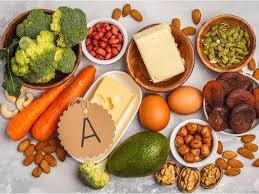
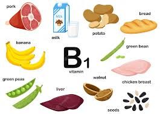
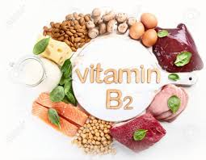
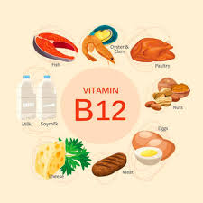
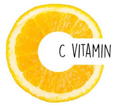
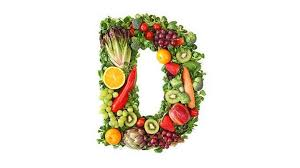
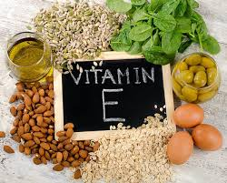
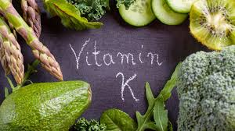

Vitaminok
A-vitamin
Funkciója:
- növekedés
- szürkületi látás
- a szaruhártya egészsége
- fertőzéssel szembeni ellenállás
Hiánya
- fejlődési zavarokat
- farkasvakságot
- a bőr szárazságát okozza
Forrásai:
tejtermékek, halmájolajak, tojássárgája.
A sárgarépában és zöldségfélékben található karotint a szervezet A-vitaminná alakítja.

B1-vitamin
Funkciója:
- szénhidrát anyagcsere
- az idegrendszer működése
Hiánya
- vizenyősödést vagy végzetes fogyással járó
beriberit okoz
Forrásai:
élesztő, tojássárgája, máj, búzacsíra, borsó, bab.

B2-vitamin
Funkciója:
- szövetlégzés
Hiánya
- a nyelv és az ajak gyulladását okozza
Forrásai:
élesztő, élesztő- és húskivonatok, tej, máj, sajt, tojás, zöldségfélék.

B12-vitamin
Funkciója:
- vérképződés
Hiánya
- vészes vérzékenységet okoz
Forrásai:
élesztő, hús, máj, vese, tej, sajt, tojás, zöldségfélék.

C-vitamin
Funkciója:
- energiatermelés
- anyagcserefolya¬matok
- fertőzéssel szembeni ellenállás
Hiánya
- skorbut
- vérzékenység
- fáradékonyság
Forrásai:
paprika, citrom, zöldségek, gyümölcsök.

D-vitamin
Funkciója:
- csontok egészséges fejlődése
Hiánya
- csontok görbülését,
- törékenységét
- csontlágyulást okoz
Forrásai:
vaj, halmájolaj. A növényi olajokban található előanyagot
a szervezet alakítja D-vitaminná napsugárzás hatására.

E-vitamin
Funkciója:
- idegrendszer,
- izomzat és a here normális működéséhez
- terhesség ki¬hordásához fontos
Hiánya
- nem jellemző
Forrásai:
növényi magvak és olajok, saláták, zöldfőzelékek, tej, vaj.

K-vitamin
Funkciója:
- megfelelő májműködés
Hiánya
- nem jellemző
Forrásai:
bélbaktériumok termelik, külső bevitele általában nem szükséges.
